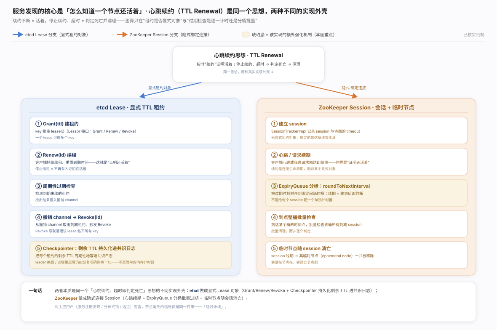
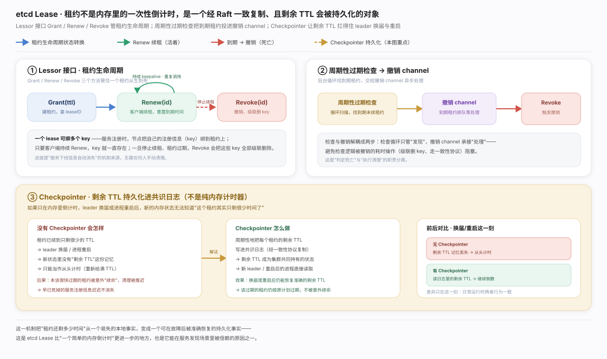
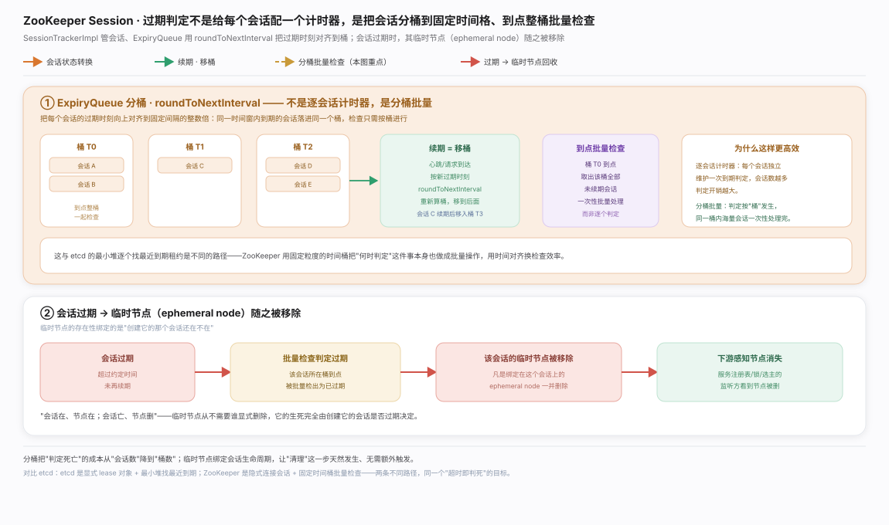
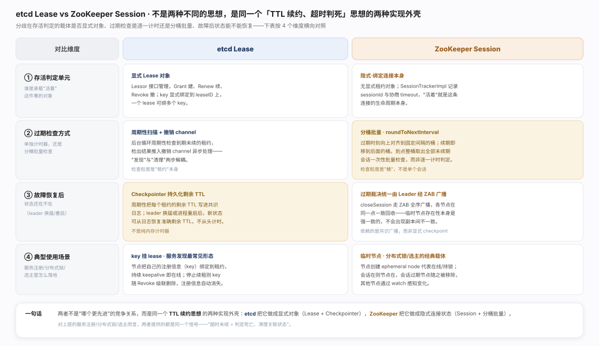

服务发现的核心不是"用什么协议"，而是"怎么知道一个节点还活着"——etcd Lease 租约与 ZooKeeper 会话 + 临时节点表面是两套 API，骨架却是同一句话：持续续约证明活着，超时未续即判死、级联清理。两种外壳的分叉与共同骨架见生态图。

etcd Lease · 租约心跳：把「续约证明活着」做成显式对象，一个 lease 绑多 key、到期级联删。关键是 Checkpointer 把剩余 TTL 持久化进共识日志，leader 换届后仍能恢复准确 TTL——这是它区别于纯内存倒计时器之处，机制见图。

ZooKeeper 会话 · 临时节点：无显式租约，绑定会话本身，ExpiryQueue 分桶批量检查过期。效果是临时节点随会话消亡（无需显式删除），这是分布式锁/选主的根基，机制见图。

两者分歧集中三处（见图）：存活判定载体（显式 Lease vs 隐式绑连接）、过期检查方式（周期扫描 vs 分桶批量）、故障后状态可否恢复（Checkpointer 持久化 vs Leader 经 ZAB 裁决）。一句话总纲：这不是「谁更先进」，而是同一个 TTL 续约思想的两种外壳——超时未续即死亡，清理与之绑定的一切。
etcd · API guarantees（含 Lease API 说明）
ZooKeeper Programmer's Guide（Sessions 一节；具体锚点本轮未能核实是否稳定，故只给根链接）——ZooKeeper 官方文档本身把临时节点的生命周期描述为与会话生命周期绑定，这正是 etcd Lease 概念在 ZooKeeper 里的等价物。